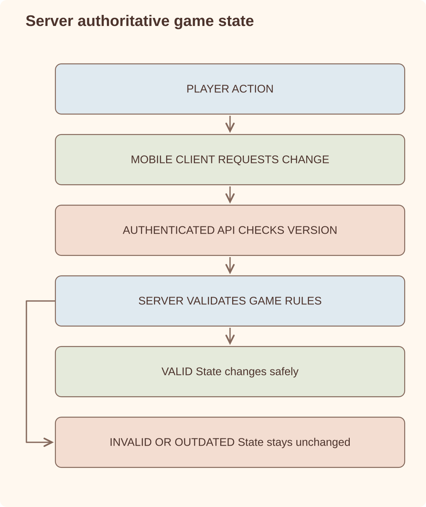

Architecture case study
Multiplayer Mobile Game
Animal Park is a multiplayer mobile game I am building for iOS and Android, including the Unity client, Firebase backend, social systems and release automation.
Unity/C# / IL2CPP (Android + iOS) / Addressables / Firebase Cloud Functions / Node.js 22 / Firestore / Crashlytics / TeamCity / fastlane / GitHub Actions
Overview
Animal Park is a full iOS and Android game build rather than a single feature demo. The backend supports player progress, inventory and map state, public profiles, clubs, club chat, tournaments, remote configuration and environment-specific deployment. The Unity/C# client is built as IL2CPP artifacts for Android and iOS, with separate development, staging and production environments.
The engineering challenge is the normal one in live games: keep iteration fast without letting saves, social systems or live configuration become unsafe or inconsistent.
Requirements
Architecture
The client can request a change. Only the server can approve it.

Key components
| Component | Responsibility | Notable decision |
|---|---|---|
utils.onAuthedCall | Wraps callable functions with a uniform authentication guard. | Every gameplay function returns a consistent error envelope and server time. |
user-progress.js | Create, load and save player data across user, inventory and map documents. | Uses Firestore batches and a save index to reject old saves. |
clubs.js | Club creation, joining, role changes, pending requests and member management. | Role checks distinguish leader/admin operations from normal membership flows. |
chat.js | Club-scoped chat fetch and send. | Verifies the authenticated user's club before reading or writing messages. |
tournaments.js | Weekly tournament creation and score reporting. | Score updates run in Firestore transactions; tournament creation buckets eligible clubs. |
core.js | Remote configuration fetch. | Returns only newer config values by version to reduce unnecessary client updates. |
Unity client & release automation
The Unity/C# client is built as IL2CPP artifacts for Android and iOS, with separate development, staging and production environments. Gameplay code is organized by domain — core simulation, level generation, online services, rewards and collection, ads/analytics/IAP integrations, UI — with editor tests alongside. Content ships through Addressables with separate dev and production build layouts, so asset iteration does not require client releases.
The DevOps path is the part that makes a one-studio game operable. TeamCity drives the Unity builds through a custom editor build layer (build manifests, build tags and TeamCity service-message integration live in the project as code). fastlane owns everything store-facing:
- Dev distribution — Firebase App Distribution with generated changelogs per build.
- iOS — Xcode build lanes and TestFlight upload via App Store Connect API keys.
- Android — Google Play upload and track promotion from testing to production.
- Operations — git tagging per build and Crashlytics dSYM symbol upload, so crash reports stay symbolicated.
Implementation detail
The highest-risk backend paths are the ones where a client claims identity or ordering: chat, saves and tournament scores. Those paths use server-side membership checks, server timestamps, save-index validation and transactions instead of trusting client state.
// Score reporting is accepted only when the authenticated user
// belongs to the claimed club and the club is in the active tournament.
if (!caller || caller.userData.clubId !== request.data.clubId) {
return utils.err("permission-denied")
}
await db.runTransaction(async (transaction) => {
const [tournamentDoc, clubDoc, memberDoc] = await Promise.all([
transaction.get(tournamentRef),
transaction.get(clubRef),
transaction.get(memberRef),
])
// update tournament participant score and member score together
})Interesting engineering problems
- How do you stop clients from writing social data outside their authority? Chat and tournament APIs verify the authenticated user's current club server-side before writing.
- How do you avoid old mobile saves overwriting newer state? Save requests carry a save index; older saves are rejected instead of merged.
- How do you start tournaments without loading the world into memory? Eligible clubs are fetched in buckets, tournament documents are created per bucket and participant club records are updated in parallel.
- How do you change game configuration without forcing client releases? Remote config documents include versions, and the client fetch returns only newer values.
Trade-offs
| Decision | Why | Cost |
|---|---|---|
| Firebase Cloud Functions and Firestore | Fast to build, good fit for mobile backend iteration and authenticated callable APIs. | Requires care around query shape, transactions and document-level consistency. |
| Callable modules by feature | Keeps progress, clubs, chat, tournaments and config understandable as separate domains. | Shared invariants must be kept in utilities and tests to avoid drift. |
| Remote config by version | Lets the game tune behavior without client releases. | Configuration becomes part of production state and needs discipline. |
Current state
- End-to-end mobile build path across Unity client, backend functions, Addressables content and store-facing release automation.
- Server-side ownership for the risky paths: saves, club membership, chat and tournament score updates.
- Separated dev, stage and production environments so backend and client changes can be tested without touching live state.
- Release automation covers generated changelogs, TestFlight, Google Play tracks and Crashlytics symbol upload.
Lessons learned
- Small game backends need production habits early: environment separation, tests, explicit deploy paths and predictable error envelopes.
- Social features are trust systems. Permission checks and server-owned timestamps matter before scale makes them painful to retrofit.
- Firebase is productive when feature modules stay narrow and high-risk updates use batches or transactions deliberately.